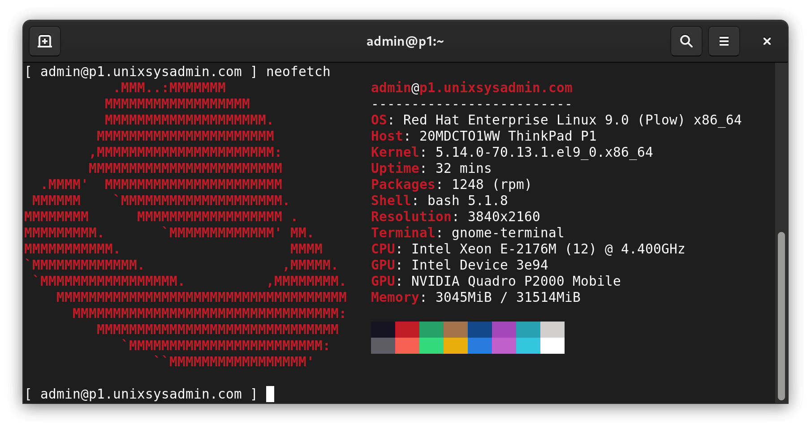

1. Special Displays#
In this part of this book we will cover some cells that have special displays.
If there’s any misalignment with the baseline, please refer to the called functions in common.py file.
List:
1.1 - A sample image that use customized styles
1.2 - Display String in customized styles
1.3 - Display terminal shell command results
1.4 - Display bash command in customized styles
1.5 - Use HTML and CSS to customize styles
%run -i ../../python/common.py
bash = BashSession()
---------------------------------------------------------------------------
ModuleNotFoundError Traceback (most recent call last)
File ~/ope-project/ope-project/content/python/common.py:4
2 from IPython.core.display import HTML, Markdown, TextDisplayObject, Javascript
3 from IPython.display import display, IFrame, Image
----> 4 import ipywidgets as widgets
5 from ipywidgets import interact, fixed, Layout
6 import os, requests, pty, re, subprocess, struct, sys, fcntl, termios, select
ModuleNotFoundError: No module named 'ipywidgets'
---------------------------------------------------------------------------
NameError Traceback (most recent call last)
Cell In[1], line 2
1 get_ipython().run_line_magic('run', '-i ../../python/common.py')
----> 2 bash = BashSession()
NameError: name 'BashSession' is not defined
1.1. A sample image that use customized styles#
display(HTML(htmlFig("../../images/sample-image.jpg",
align="left",
margin="auto 3em 0 auto",
width="100%", id="fig:vnm",
caption="Figure: A Sample Image that use special style")))
1.2. Display String in customized styles#
X=np.uint8(0xae)
XL=np.bitwise_and(X,0xf)
XH=np.bitwise_and(np.right_shift(X,4),0xf)
displayStr("0b10101110 = 0x"+format(X,"02X"), size="4em", align="center")
1.3. Display terminal shell command results#
TermShellCmd('hello')
TermShellCmd('ls')
1.4. Display bash command in customized styles#
bash.run("man mkdir", height="10em")
del bash
1.5. Use HTML and CSS to customize styles#
This is the example of image overlapping with backgrounds.
This is some sample texts.: This is some sample texts.This is some sample texts.This is some sample texts. This is some sample texts. This is some sample texts. This is some sample texts. This is some sample texts. This is some sample texts. This is some sample texts. This is some sample texts. This is some sample texts. This is some sample texts. This is some sample texts. This is some sample texts. This is some sample texts. This is some sample texts. This is some sample texts. This is some sample texts. This is some sample texts. This is some sample texts.
{kind=link}
2. Introduction to Myst Markdown#
Myst Markdown is a lightweight markup language designed for writing technical documentation. It supports common Markdown syntax for headings, emphasis (like bold and italic), lists (both bulleted and numbered), code blocks (with syntax highlighting), tables, and more.
2.1. Displaying tables in Myst Markdown#
Here are some ways you can use Myst Markdown to display tables:
left |
center |
right |
|---|---|---|
a |
b |
c |
foo |
bar |
|---|---|
baz |
bim |
2.2. Displaying Images in Myst Markdown#
You can display images in Myst Markdown using paths.

or using image tags:
{kind=link}
2.3. Other Various Myst Markdown Examples#
Term with Markdown : Definition with reference
A second paragraph : A second definition
Term 2 ~ Definition 2a ~ Definition 2b
Term 3 : A code block : > A quote
Important
Note
This text is standard Markdown
Here’s the first card.
Here’s the second card.
Here’s the third card.
Content 1
Content 2